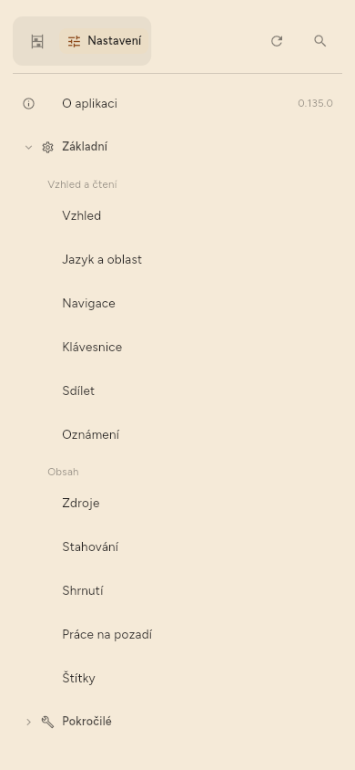
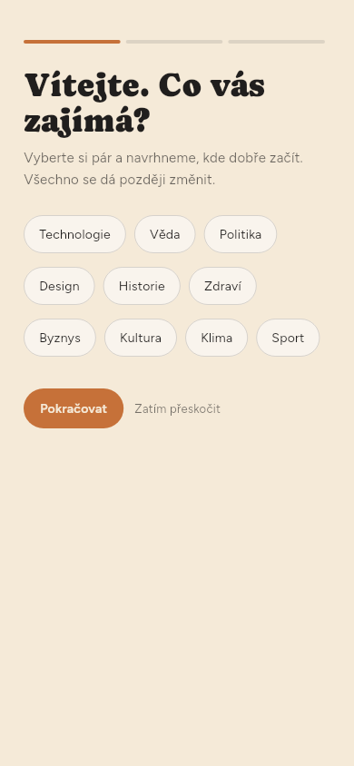
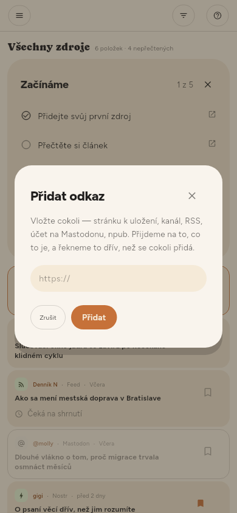
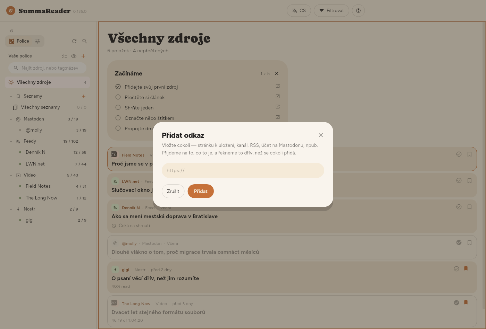
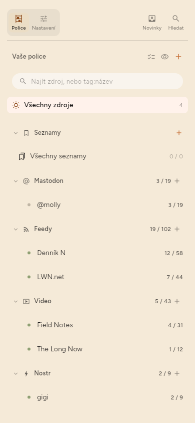
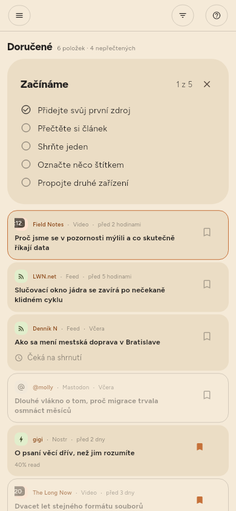
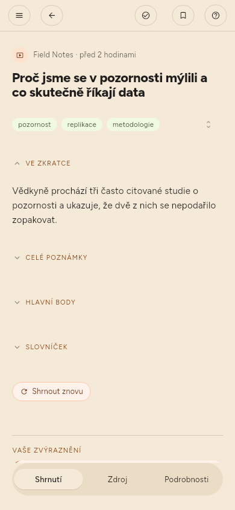
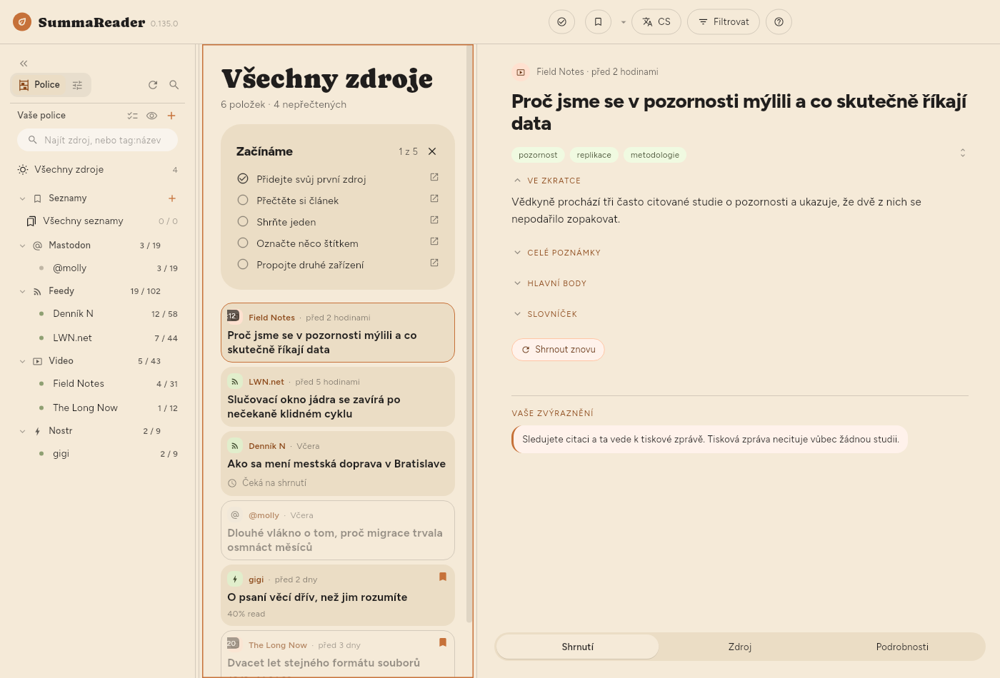
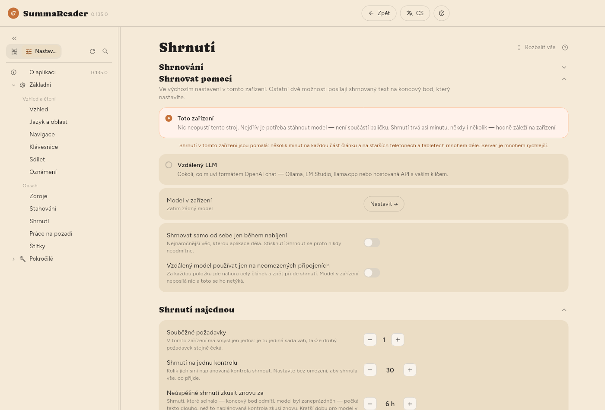
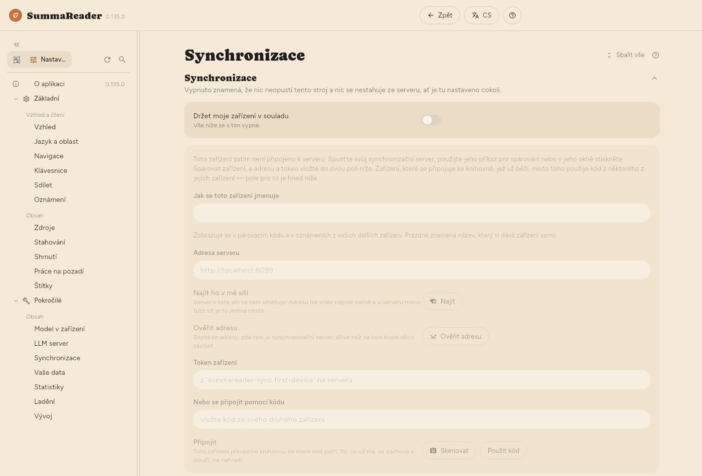

← Instalace · Obsah · Začínáme →
První kroky
Tyto kroky jsou stejné v telefonu i na počítači, pokud krok neříká jinak. Seznam Začínáme nahoře ve Všech zdrojích prochází stejné kroky a každý odškrtne. Klepnutím na krok otevřete jeho část této příručky. Klepněte na × a pak na Skrýt do příštího spuštění nebo Už nezobrazovat. Znovu ho zobrazíte v Nastavení › Základní › Vzhled › Seznam › Zobrazit seznam Začínáme.
V telefonu je obrazovka příliš úzká na víc věcí najednou:
- Police je seznam všeho, co sledujete, s Všemi zdroji a Všemi seznamy. V telefonu je skrytá. Otevřete ji klepnutím na ☰ vlevo nahoře.
- Článek se otevře přes celou obrazovku. Klepnutím na ← se vrátíte na seznam.
- Nastavení je druhá karta nahoře v polici. Klepněte na ni a pak na stránku pod Základní nebo Pokročilé.

Na počítači je police vždy vlevo a článek se otevírá vedle seznamu.
1. Přidejte první zdroj
Zdroj je cokoli, co aplikace sleduje za vás: kanál zpravodajského webu, videokanál, účet na Mastodonu. Kanál (feed) je seznam nových článků, který web zveřejňuje pro programy, jako je tento.
Při prvním otevření se aplikace zeptá, co vás zajímá.
- Klepněte na témata, která vás zajímají, a pak na Pokračovat.
- Klepnutím na navržený zdroj ho začnete sledovat, nebo vložte do pole adresu webu či kanálu a klepněte na Přidat. Pak klepněte na Pokračovat.
- Zaškrtněte Shrnovat, co čtu, pokud má aplikace psát shrnutí, nebo políčko nechte prázdné. Později to můžete změnit (krok 4).
- Klepněte na Začít číst.
Chcete-li zdroje přidat až později, klepněte na první obrazovce na Zatím přeskočit.

Zdroj přidáte kdykoli takto:
- Otevřete polici.
- Klepněte na + vedle Vaše police. Otevře se okno Přidat odkaz.
- Vložte adresu.
- Klepněte na Přidat. Když je adresa zdroj — kanál, videokanál nebo autor —, okno místo toho ukáže Sledovat zdroj a Uložit stránku. Klepněte na to, co chcete.
- Pokud web nabízí volbu, vyberte kanál nebo samotnou stránku. Aplikace jednu možnost označí jako doporučenou.


2. Zkontrolujte nové články
Když klepnete na Začít číst, aplikace jednou zkontroluje zdroje, které jste vybrali. Potom nová instalace kontroluje jen tehdy, když o to požádáte (viz konec tohoto kroku). Pokud Všechny zdroje ukazují Zatím nic nenačteno, klepněte na nich na Zkontrolovat novinky. Kontrola kdykoli hned:
- Otevřete polici.
- Klepněte na Zkontrolovat novinky (kulatá šipka nahoře v polici).
Nové články se objeví ve Všech zdrojích.

Jak často aplikace kontroluje, změníte v Nastavení › Základní › Stahování › Jak často kontrolovat. Jen když o to požádám vypne všechny automatické kontroly.
První kontrola stáhne články, které zdroj právě nabízí. Nejsou pro vás nové, takže je aplikace automaticky neshrnuje. Shrnuje jen články, které přijdou až po přidání zdroje.
3. Přečtěte si článek
- Klepněte na článek ve Všech zdrojích.
- Přečtěte si ho. Článek má dole tři karty: Shrnutí, Zdroj (celý text) a Podrobnosti.
- V telefonu se klepnutím na ← vrátíte na seznam.



4. Zapněte shrnutí a zvolte, kde poběží
Shrnutí píše model: program, který článek přečte a napíše jeho krátkou verzi. Model běží na jednom ze dvou míst.
- Toto zařízení — model běží ve vašem telefonu nebo počítači. Nic zařízení neopustí. Model stáhnete jednou. Shrnutí v zařízení jsou pomalá: několik minut na každou část článku a mnohem déle ve starších telefonech a tabletech.
- Vzdálený LLM — článek jde na server, na kterém model běží: na váš vlastní, nebo na placenou službu. Server je mnohem rychlejší. Je to jediný případ, kdy text článku opustí vaše zařízení.
Nastavení:
- Otevřete Nastavení › Základní › Shrnutí › Shrnování › Shrnování a zkontrolujte, že je zapnuté.
- V Nastavení › Základní › Shrnutí › Shrnovat pomocí vyberte Toto zařízení nebo Vzdálený LLM. Když poprvé vyberete Toto zařízení, aplikace vás upozorní, že shrnutí jsou zde pomalá. Shrnování pokračuje na pozadí, zatímco čtete.
- Pro Toto zařízení: otevřete Nastavení › Pokročilé › Model v zařízení › Najít model, vyhledejte a stáhněte model. Pak v Nastavení › Pokročilé › Model v zařízení › Modely v tomto zařízení klepněte vedle něj na Spustit.
- Pro Vzdálený LLM: otevřete Nastavení › Pokročilé › LLM server › LLM server. Vyplňte Adresa, Model a, pokud ho server vyžaduje, klíč API. Klepněte na Otestovat.
- Otevřete článek a klepněte na Shrnout.


V Premium umí aplikace nové články shrnovat i automaticky, po každé kontrole. Zapněte Shrnout v nastavení zdroje (viz Správa zdrojů).
5. Dejte něčemu štítek a uložte to do seznamu (jen Premium)
Štítky a seznamy jsou v Premium.
Štítek je slovo, které dáte článku nebo zdroji, například linux. Shrnutí štítky navrhuje.
- Otevřete článek.
- Pod nadpisem klepnutím na navržený štítek ho přijmete, nebo klepněte na tužku (Upravit štítky) a napište vlastní.
Seznam drží články pohromadě. Uložené je první seznam.
- Otevřete článek.
- Klepnutím na záložku nahoře ho uložíte do aktuálního seznamu.
- Chcete-li jiný seznam, podržte záložku a pak vyberte seznam nebo vytvořte nový.
6. Spárujte druhé zařízení
Synchronizace udržuje vaše zařízení ve shodě: co jste přečetli, co jste uložili, i samotné články. Potřebuje synchronizační server, který provozujete sami. Server ukládá jen šifrovaná data a vaši knihovnu číst nemůže.
Server stáhněte z jeho stránky s vydáními; Získání serveru říká, který soubor vzít.
V prvním zařízení:
- Otevřete Nastavení › Pokročilé › Synchronizace › Synchronizace.
- Zapněte Držet moje zařízení v souladu.
- Vyplňte Adresa serveru a Token zařízení. Obojí vám dá server.
- V Nastavení › Pokročilé › Synchronizace › Další zařízení klepněte na Vytvořit kód. Aplikace ukáže QR kód a tentýž kód jako text.
Ve druhém zařízení:
- Nainstalujte aplikaci a otevřete Nastavení › Pokročilé › Synchronizace › Synchronizace.
- Zapněte Držet moje zařízení v souladu.
- Pod Nebo se připojit pomocí kódu klepněte na Skenovat a namiřte fotoaparát na QR kód. V zařízení bez fotoaparátu vložte do pole textový kód. V Linuxu může kód naskenovat webkamera.
- Klepněte na Použít kód.
Kód nese klíč k vaší knihovně. Ukažte ho jen svému vlastnímu zařízení a po dokončení ho zavřete.


7. Vytvořte obnovovací kód
Obnovovací kód je jediná cesta zpět do knihovny, pokud přijdete o všechna spárovaná zařízení. Nikdo vám ho nemůže vytvořit znovu.
- Otevřete Nastavení › Pokročilé › Synchronizace › Obnovovací klíč › Obnovovací kód.
- Klepněte na Vytvořit.
- Kód si zapište. Uschovejte ho tam, kam se dostanete, i když tohle zařízení zmizí. Aplikace ho ukáže jen jednou a kopii si neuchová.